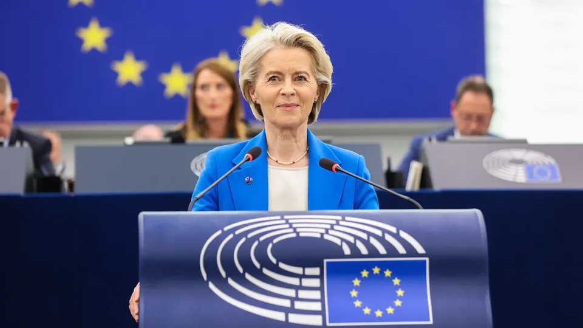

世界苦茶10月10日新闻 | 34条 | 中国反制将14家外国公司加入制裁

中国反制将14家外国公司加入制裁 | 中国黄金周人均消费降至三年最低 | NBA在2019后重返中国 | 普京承认击落在阿塞拜疆的客机 | 冯德莱恩成功度过不信任投票
苦茶数据
美元兑人民币：7.13（昨日7.13，前日7.15）
美元兑日元：152.75（昨日153.10，前日152.60）
上证指数：3913（昨日3933，前日3882）
标普500指数：6735（昨日6753，前日6714）
比特币：121406（昨日121863，前日122013）
布伦特原油：65.04（昨日66.43，前日65.91）
中国新闻
• 大陆对台军演转为实战准备 分析估2035年动武可能性高。
中国大陆解放军对台军事演训转向更具实战性的备战态势。外国政要与学者示警，北京正练习对台精准打击，目标是在2027年具备攻台能力但综合军改时程与部队人才养成，预计2035年将是对台动武可能性最高的时间点。自九三阅兵以来，各界更加关注大陆攻台能力，以及台海爆发冲突的可能性。双十节前夕，台湾国防部星期四公布年度国防报告书，指出解放军积极发展与整备军事能力，透过各项准军事行动、网络电子战、以演代训、火力打击及封锁隔离能力等，对台湾形成军事威胁等。台湾国防大学中共军事事务研究所教授马振坤星期三在政治大学国际关系研究中心的座谈会上指出，根据台湾军方公开资讯，解放军轰炸机9月在台海活动高达14天。
• 自香港风波以来，NBA比赛首次重返中国。
自香港风波以来NBA首次重返中国 美国国家篮球协会本周将重返中国，这是自2019年以来的首次。两场季前赛定于周五和周日在澳门威尼斯人度假村的体育馆举行，对阵双方为布鲁克林篮网和菲尼克斯太阳队。六年前，当该组织的一名高管表达对香港支持民主示威者的立场后，中国实际上冻结了与NBA的往来。香港曾是英国殖民地，近年来民权受到收紧。此番比赛发生在NBA与中国科技巨头阿里巴巴于去年底宣布建立多年合作伙伴关系之后。布鲁克林篮网的老板是阿里巴巴董事长蔡崇信。这是自2007年以来。
• 中国“超级黄金周”票房表现落后，但全年形势好转。
中国“超级黄金周”票房走低，但全年表现改善 延长的国庆假期未能吸引更多观影人群进入影院，尽管排片增加且票价下降 中国延长的“超级黄金周”假期期间，影院票房较去年的国庆小长假出现下滑，但自年初以来的全国累计票房已超过2024年全年的总和。根据票房监测机构灯塔数据，8天假期期间影院票房为18.3亿元人民币。该数字为2017年以来的第二低位，低于去年常规七天国庆假期的21亿元。国庆档—今年因中秋节与黄金周重合而延长—传统上是中国仅次于春节的第二大电影档期。大片通常选择在这两个长假上映，以争取更高的观众流量和消费。2019年国庆档票房曾达到峰值50亿元。尽管排片增加，票价下调且多出一天假期。
• 特朗普政府解聘一名同中国女子有恋爱关系的外交官。
美国特朗普政府周三宣布，国务院解聘了一名曾经隐瞒自己与中国公民有恋爱关系的雇员。美国国务院发言人皮戈特表示：“美国国务院已正式解雇一名外交官，该官员承认隐瞒了与一名同中共有关联的中国公民的恋爱关系。” 美国国务院表示，这名未透露其身份的官员在镜头前表示，这名中国女子“可能是间谍”，但未透露任何间谍活动的证据。据美国国务院称，这名被解职员工称，其伴侣的父亲是“地地道道的共产党员”。美国国务院表示，这是特朗普上任后不久签署行政命令后首次已知的解雇事件，特朗普在行政命令中要求所有员工“忠实执行总统的政策”。
• 中国将主办全球女性峰会，习近平将发表主旨演讲。
峰会于10月13-14日举行，旨在推动“全球追求性别平等和妇女发展”，中国外交部称 阅读时间：3分钟 为何您可以信赖南华早报 26 张菲比 中国将于下周在北京举办一场全球妇女峰会，习近平主席将出席开幕式并发表主旨演讲。广告 外交部周四宣布了该活动，证实了《南华早报》此前关于该活动将于十月举行的报道。该峰会旨在纪念三十年前在北京举行的联合国第四次世界妇女大会，最初由外交部长王毅在三月宣布。
**• 世界大学排名：清华12 北大13 东大26 **
英国教育数据机构泰晤士高等教育周四公布了2025年的全球大学排名。亚洲有929所学校上榜，为历年最多。THE 评价称，中国等的大学排名上升，东亚地区的大学发展迅速。日本排名第1的是东京大学，从2024年的第28位上升至第26位。综合第1位连续10年是英国牛津大学，第二位仍是美国麻省理工学院，前10位被英美的大学占据。但进入500强的美国大学数量为102所，在THE统计中创出历史最低。亚洲排名第一的是中国大陆的清华大学，连续三年排在第12位，北京大学排在第13位。中国大陆的大学有超过20%排名上升。韩国有四所大学进入前一百位，比2024年翻了一番。香港有6所大学进入前200位，在THE统计中创历史最多。
印太新闻
• 国民党主席选举黑函多剑指郑丽文 郝龙斌罗智强奋起直追。
台湾前立委郑丽文上周在国民党主席候选人民调中领先，对她不利的黑函与攻击随后纷至沓来。急起直追的国民党主席候选人、台北前市长郝龙斌也怒指，攻击他和现任国民党主席朱立伦密室协商等谣言与假民调，都是破坏党内团结的敌人。郝龙斌在国民党星期二首场政见会中展现魄力，宣示若当选党主席，至少要在2026年地方选举拿下台南或高雄其中一都，否则马上辞职。另一位候选人、国民党立委罗智强当场也立下军令状说，如果2026不能拿下更多议员席次，没有打下高雄或台南，他立刻辞掉党主席。在野的国民党将在10月18日改选党主席，除郝龙斌，郑丽文，罗智强外，还有孙文学校总校长张亚中。
• 印尼能源项目：西方融资衰退，中国加速推进。
为助力印尼摆脱煤炭依赖，2022年，一个由西方国家包括日本组成的国际联盟发起了「公正能源转型伙伴关系」，承诺提供总计200亿美元的资金，其中包括赠款、低息贷款以及私人融资，但截止目前实际仅到位12亿美元。而JETP的早期推动者美国已于2025年3月悄然退出，协调工作随即落到了德国和日本头上。
• 日本首相提名将延期，高市面临困难开局。
日本自民党总裁高市早苗正在推进旨在组建政府的联合执政的协商。自民党与公明党的协议被罕见地延期，首相提名很可能推迟到10月20日以后。包括物价上涨对策在内的2025年度补充预算案在年内通过变得艰难，外交日程也将受到影响。高市8日与干事长铃木俊一等新领导层一同拜访各党党魁。包括副总裁在内，自民党内的5位高层，即「党五役」中麻生派占据3人。干事长代理由存在未记载政治资金问题的萩生田光一担任。
科技新闻
• YouTube 正允许一些此前被封禁的用户回归。
YouTube 周四将开始向此前被封禁的用户提供创建新账号的机会，并可能允许他们重新发布那些曾导致其被终止但现在不再违反 YouTube 规则的视频。YouTube 上个月宣布了允许此前被封禁用户及其内容重返视频平台的计划。该举措是在共和党议员调查拜登政府是否施压科技公司删除某些类型内容之后公布的。YouTube 表示，过去几年中已取消了禁止用户反复发布关于新冠疫情和 2020 年美国大选结果错误信息的规则。现在，因违反这些规则而被终止的用户有机会回归。
• 特斯拉因其自动驾驶汽车驶入逆向车道而被调查。
美国政府正在对特斯拉进行调查，此前有报告称该公司自动驾驶汽车违反了交通法规，包括在道路错误一侧行驶以及闯红灯。根据美国国家公路交通安全管理局的一份文件，该机构知悉有58起电动汽车此类违法行为的报告。估计约有290万辆配备完全自动驾驶技术的汽车将纳入此次调查。特斯拉及其CEO埃隆·马斯克已被征询置评。NHTSA的初步评估将“评估‘完全自动驾驶’模式的范围，频率及潜在安全后果”。在该模式下——特斯拉车主需额外付费——车辆可执行变道和转弯，但驾驶员必须始终保持警觉，随时接管。根据NHTSA的报告，有六起事故由车辆在红灯时尚未变绿就起步造成，其中四起导致人员受伤。该交通管理机构表示。
经济新闻
• 中国黄金周出行人次创新高 但人均消费降至三年来最低。
中国国庆中秋长假期间，国内出行人数创下历史新高，但人均旅游支出跌至三年来最低水平，显示在经济复苏疲弱背景下，中国民众消费依然谨慎。据新华社报道，中国文化和旅游部星期四公布数据显示，国庆中秋假日期间，中国国内出游人次达8.88亿人次，较去年同期增加1.23亿人次；国内出游总花费8090.06亿元，较去年增加1081.89亿元。中国今年将国庆和中秋假期合并为八天长假，较去年同期多出一天，进一步推高民众出游热情。根据中国交通运输部星期四发布的数据，黄金周期间全国跨区域人员流动量累计24.33亿人次，日均3.04亿人次，较去年同期日均增长6.3%，创历史新高。
• 美FCC将投票收紧对中国电信设备限制措施。
针对中资企业所生产、被认为有国安风险的的电信设备，美国联邦通信委员会将于10月下旬进行投票，收紧涉及这些设备的限制措施。这将是美国对中国采取一系列行动中的最新举措。据路透社报道，美国联邦通信委员会早前将华为、中兴通讯、海康威视、中国移动、中国电信等公司，列入禁止进口或销售新设备的“涵盖名单”。美国联邦通信委员会主席卡尔说，FCC将在10月28日针对含有涵盖名单中零部件的设备进行投票，对涉及这些设备的授权事宜发出禁令，并在特定情况下，针对先前获批准的设备，授权委员会实施销售禁令。
• 比亚迪进军阿根廷乘用车市场。
中国电动汽车巨头比亚迪星期三在阿根廷首都布宜诺斯艾利斯发布三款电动与混合动力车，正式进军阿根廷乘用车市场。据路透社报道，比亚迪阿根廷子公司项目总监邓元披露，根据阿根廷政府分配的额度，比亚迪目前可进口约7800辆纯电动车和混合动力车。比亚迪阿根廷销售总监帕斯则告诉新华社，比亚迪在当地首批预售已超过1500辆，显示阿根廷消费者对新能源车日益感兴趣。阿根廷政府日前宣布，今年免除5万辆电动车及混合动力车的进口关税，明年将继续开放免税进口配额，以促进新能源车普及。阿根廷是仅次于巴西的南美洲第二大汽车市场，但当地电动车普及率却是区域最低。比亚迪此前已进入巴西、乌拉圭、哥伦比亚和智利等南美国家市场。
• 中国将14个外国实体列入不可靠清单。
美国星期三将15家中国公司列入出口管制清单后，中国隔天采取反制，将14家外国公司列入不可靠清单。中国商务部星期四在官网公告称，决定将反无人机技术公司、 迪杰恩技术公司等14个外国实体列入不可靠清单。这些实体被禁止从事与中国有关的进出口活动，以及在中国境内新增投资，同时禁止中国境内的组织、个人与其进行有关交易、合作等活动，特别是传输数据、提供敏感信息。商务部新闻发言人称，这些公司与台湾开展军事技术合作、发表涉华恶劣言论、协助外国政府打压中国企业，严重损害中国国家主权、安全和发展利益。路透社统计，被列入清单的14个外国实体主要位于美国。在此之前。
• 尽管政府停摆，本月仍将公布最新通胀数据。
一位特朗普政府官员告诉CNN，尽管政府停摆，劳工统计局正在召回部分工作人员以准备其备受关注的通胀指标——消费者价格指数报告。最新的CPI数据原定于10月15日发布。目前尚不清楚该报告是否会在下周如期发布或会因停摆而推迟。该位特朗普官员告诉CNN，数据将在11月1日之前公布，因为这是公布社会保障金年度上涨幅度的最后期限，而计算该调整需用到9月的CPI数据。自10月1日政府资金到期以来，劳工统计局已停止一切运营。根据美国劳工部发布的应急计划，停摆期间整个局里只有一名员工被指派持续全职工作。这意味着数据收集和分析实际上已被中断。该特朗普官员对CNN表示，若缺少CPI数据。
• 特朗普威胁要停止从中国进口商品——同时寄希望于习近平购买美国大豆。
广告 特朗普威胁停止从中国进口——同时指望习近平购买美国大豆 尽管特朗普表示确定会在本月晚些时候与习近平会面，中国政府尚未作出任何官方宣布 阅读时间：3分钟 为何可以信任南华早报 16库什布·拉兹达在华盛顿报道 随着北京限制稀土出口并回避美国大豆，美国总统唐纳德·特朗普在计划与习近平会面前向中国施压，威胁停止进口，同时承诺重新向美国农民开放市场。广告 在周四的一次内阁会议上，当被问及希望从本月晚些时候可能与习近平的面对面会谈中达成什么时候，这位强调“美国优先”的总统强调了美国市场对中国的杠杆作用。“我们从中国进口大量商品，也许我们得停止这样做。”
• 贝森特表示，美国已购买比索并敲定了一项为阿根廷提供200亿美元救助的框架。
特朗普政府已敲定向阿根廷提供200亿美元救助计划，财政部长斯科特·贝森特周四在社交媒体上表示。此外，美国还“直接”购买了阿根廷比索，贝森特称，此举罕见，是试图稳定该国金融市场的最新步骤。贝森特并未说明美国购买了多少比索。财政部的代表尚未立即回应CNN的置评请求。“美国财政部已准备好即时采取一切必要的非常措施以为市场提供稳定，”贝森特写道。他宣布的这项200亿美元救助框架被称为“货币掉期”，允许阿根廷央行与财政部将比索兑换成美元。这样做可以通过注入更多流动性来帮助稳定其金融市场。
• 特朗普的贸易战让印度与英国走得更近。
孟买，印度——唐纳德·特朗普的关税政策正在加速英国加强与印度关系的步伐——即便这意味着将贸易置于道德之上。本周，首相基尔·斯塔默率领英国史上规模最大的对印经贸代表团，带着125位商界领袖飞抵孟买，签署旨在促进投资的协议。这是一次声势浩大、全方位的努力，旨在提振停滞的英国经济——并帮助两国降低对美国的依赖。然而，与新德里打交道并非易事。
• 比亚迪在巴西投产大型工厂，成为其在亚洲以外规模最大的投资。
比亚迪在巴西开设大型工厂，成为其在亚洲以外最大投资 建在前福特厂址的巴伊亚工厂预计将创造2万个就业岗位，并巩固其在巴西电动汽车市场74%的份额 中国车企比亚迪周四为其所谓的亚洲以外最大电动汽车工厂揭幕，此举凸显巴西在引领南美清洁出行转型方面的努力，同时也再次引发外界对中国日益扩大的产业足迹的关注。位于巴伊亚州卡马卡里的巨大园区开幕式，汇聚了总统路易斯·伊纳西奥·卢拉·达席尔瓦，副总统热拉尔多·阿尔克明，以及州和地方官员和数十位业界人士。此时恰逢比亚迪推出其第1400万辆新能源车。
• 阿根廷比索危机加重，政府票据利率超过80%。
据彭博报道，阿根廷短期利率周三飙升，政府加大捍卫比索的力度，进一步加剧了本已严重的现金紧缩，本就脆弱的经济雪上加霜。市场信心恶化，11月28日到期的本地政府Lecap票据收益率从周二的74%跃升至87%，而上周末仅为51%。Lecap票据是阿根廷财政部发行的短期本地货币票据，全称为 “Letras Capitalizables”，可以理解为可资本化票据，即其利息在票据期限内可以复利计入本金，最后一次性支付。通常以比索计价，期限很短，主要用于政府融资，同时也是金融机构和投资者的短期投资工具。据两位直接了解情况的人士透露，此次收益率飙升正值财政部连续第七个交易日抛售美元，耗资至少3.2亿美元。
俄乌战争
**• 普京10月9日首次承认，俄罗斯防空系统为2024年12月阿塞拜疆客机坠机事件负责。针对乌克兰无人机的防空系统向客机发射2枚导弹，导弹在客机附近10米处爆炸。 **
• 在大规模无人机袭击中，基辅可能出现供水和供电短缺。
编辑注：这是正在发展的新闻，随着新细节出现将会更新。俄罗斯在10月10日深夜对基辅发动大规模无人机袭击，可能扰乱该市的供水和供电。基辅市长维塔利·克里琴科表示：“由于敌方对首都的大规模无人机攻击，电力和供水可能会中断。所有应急队伍正在监测情况并准备应对。”当晚较早时候，本地时间约23:44，克里琴科在电报上报告称，乌克兰防空部队正在积极拦截来袭无人机。尚未报告人员伤亡和袭击破坏程度，可能的水电中断也尚未得到确认。近几周来，俄罗斯在冬季来临前加大了对乌克兰民用和能源基础设施的打击力度。
• 据报道，俄方袭击在冬季来临前已削减乌克兰逾一半的天然气产量。
乌克兰战争最新：据称俄方袭击在冬季来临前摧毁了乌克兰一半以上的天然气产能 10月9日主要进展： - 据称俄方袭击在冬季来临前摧毁了乌克兰一半以上的天然气产能 - 乌军称打击了俄罗斯沃罗格勒州的天然气和石油设施 - 泽连斯基称：若俄方发动动员，欧洲面临爆发大规模战争的“重大风险” - 欧盟议会呼吁做好在成员国领空击落俄罗斯飞机、无人机的准备 - 莫斯科称塞尔维亚向俄罗斯库尔斯克州提供约600万美元的人道主义援助 彭博社10月9日报道，援引未具名消息人士称，俄方袭击在冬季来临前摧毁了乌克兰超过一半的天然气生产能力。
• 欧盟议会呼吁在成员国领空做好击落俄罗斯飞机和无人机的准备。
欧洲议会呼吁对在成员国领空出现的俄方飞机、无人机准备采取击落措施 欧洲议会于10月9日通过一项决议，谴责俄罗斯持续的“升级行动”，并呼吁对侵犯欧盟领空的行为采取更强硬的反应，包括击落未获授权的无人机和飞行器。此举正值欧洲各地对关键基础设施附近出现未获授权无人机的担忧加剧之际，尤其是在地缘政治紧张加剧和涉及俄罗斯的频繁领空侵犯背景下。根据议会网站的官方声明，该决议以469票赞成，97票反对，38票弃权通过。议员们将近期涉及欧盟和北约成员国领空的违规行为，尤其是针对波兰，爱沙尼亚，拉脱维亚，立陶宛和罗马尼亚的侵犯，全部归咎于俄罗斯。
• 泽连斯基在捷克民粹主义领导人赢得选举后首次与其通话。
泽连斯基在选举获胜后首次与捷克民粹派领导人通电话 乌克兰总统弗拉基米尔·泽连斯基10月9日表示，他与捷克民粹主义党派ANO的领导人安德烈·巴比什进行了通话，巴比什在该国议会选举中获胜。此次通话正值基辅担忧巴比什领导的政府可能削弱捷克的亲乌立场之际，因他曾质疑持续军事援助及乌克兰的欧盟入盟路径。泽连斯基表示，他向巴比什通报了乌克兰与美国、欧洲国家及其他伙伴合作推进和平的外交努力，以及更广泛的外交动态。“安德烈先生对乌克兰人民在我们抵抗俄罗斯侵略中的勇气表示赞赏，”泽连斯基说。“我们同意在不久的面对面会晤中讨论未来的合作。”
• 乌克兰表示，如果特朗普促成与俄罗斯停火，将提名他角逐诺贝尔和平奖。
乌克兰表示，如果唐纳德·特朗普促成与俄方的停火，将提名其角逐诺贝尔和平奖 乌克兰总统沃洛德米尔·泽连斯基于10月8日对记者表示，如果特朗普促成与俄罗斯的停火，乌克兰准备提名他角逐诺贝尔和平奖。特朗普承诺斡旋基辅与莫斯科之间的快速和平协议，结束持续逾三年半的全面俄侵。这一努力在很大程度上陷入停滞，因俄罗斯持续拒绝停火并要求乌克兰做出领土让步。这位美国总统自重返白宫以来多次吹嘘已结束“七场战争”，并积极争取获得这一殊荣。包括以色列总理本杰明·内塔尼亚胡在内的一些官员已提出提名特朗普的名字。挪威诺贝尔委员会将于10月10日宣布2025年诺贝尔和平奖。
世界新闻
• 特朗普命令之下，美国司法部进入报复模式。
在特朗普施压司法部要求起诉纽约总检察长詹乐霞之后，一名由他亲自挑选的检察官，于周四在弗吉尼亚州东区推动对詹乐霞发起了起诉。起诉书内容尚未公开。美国弗吉尼亚州东区联邦检察官霍利根当天向大陪审团提交证据，寻求对詹乐霞提出按揭欺诈的指控。詹乐霞是纽约州民主党人，曾对特朗普提起民事诉讼。此次针对她的起诉，发生在两周前检察官林赛·霍利根起诉前联邦调查局局长詹姆斯·科米之后。霍利根指控科米向国会作伪证。科米已于周三出庭并否认指控，称霍利根的起诉具有“报复性”和“选择性”。就在起诉几天前，特朗普曾公开要求司法部立刻起诉科米、詹乐霞和加州参议员亚当·希夫。
• 美联社消息人士称，纽约州总检察长莱蒂西亚·詹姆斯因涉嫌欺诈被起诉。
一位知情人士周四告诉美联社，大陪审团已就一项欺诈指控对纽约总检察长莱蒂西亚·詹姆斯提出起诉，这是司法部针对总统唐纳德·特朗普眼中“敌人”的最新一宗案件。华盛顿——纽约总检察长莱蒂西亚·詹姆斯周四因按揭欺诈被起诉。此前，特朗普曾在誓言要对其最大的政治敌人进行报复后，敦促司法部提起此案。詹姆斯是民主党人，因在特朗普第一任期后提起诉讼，指控他以关于其财富的谎言建立了商业帝国，激怒了特朗普。此次起诉指控她在2020年于弗吉尼亚州诺福克购买住房时犯有银行诈骗和对金融机构作虚假陈述。负责东弗吉尼亚地区的首席联邦检察官——一名曾任特朗普助手的人士——在她被推入该角色数周后亲自向大陪审团出示了此案。
• 德国废除三年快速入籍通道。
德国废除三年快速入籍通道 2025年10月9日德国联邦议院投票通过移民政策改革方案，去年开始执行的“加速入籍程序”被取消。联邦内政部长多布林特表示，这是一个“明确信号”，旨在消除对非法移民的吸引力。本周三，德国联邦议院废除了上届政府的移民政策改革方案。新通过的法律取消了在德国居住三年后即可快速入籍的选项。未来，德国公民身份申请必须至少居住五年。联邦内政部长多布林特表示，这是一个“明确信号”，旨在消除对非法移民的吸引力。议会中450名议员投了赞成票。除了基民盟/基社盟和社民党联盟派系的成员外，德国选择党的议员也投了赞成票。另有134张反对票，来自左翼党和绿党。另外还有2票弃权。
• 匈牙利作家拉斯洛·克拉斯纳霍尔凯获得诺贝尔文学奖。
匈牙利作家拉斯洛·克拉斯纳霍尔卡伊获得诺贝尔文学奖 斯德哥尔摩——匈牙利作家拉斯洛·克拉斯纳霍尔卡伊以其将阴郁世界观与辛辣幽默相结合的超现实与无政府主义小说，周四获得诺贝尔文学奖，评委会称其“以令人信服且富有远见的作品，在末世恐怖中重申了艺术的力量”。评审团表示，这位71岁作家有时以一整句长句构成小说，是“一位伟大的史诗作家”，其作品“以荒诞主义与 grotesque 的过度为特征”。他是自2002年伊姆雷·凯尔泰斯后首位获此殊荣的匈牙利作家。他加入了包括欧内斯特·海明威、托尼·莫里森和石黑一雄在内的杰出获奖者行列。“我既平静又非常紧张，”克拉斯纳霍尔卡伊在获悉获奖消息后对瑞典电台说。
• 乌尔苏拉·冯德莱恩在不信任投票中获胜。
斯特拉斯堡——乌尔苏拉·冯德莱恩在两项不信任投票中幸免于难，获得的支持比许多她的支持者和批评者预期的还要多。周四，欧洲议会就两项动议进行了投票——一项由左翼党提出，另一项由极右的“欧洲爱国者”提出——多数议员支持这位中右翼的欧盟委员会主席。虽然很少有人认真预期她会被罢免，但压倒性的胜利显示出她立场的增强。在极右动议上，赞成票为179票，反对378票，弃权37票；在极左动议上，赞成票为133票，反对383票，弃权78票。结果表明，冯德莱恩的中间派反对者——那些最初支持她出任主席的人——在关键时刻再次团结起来支持她。
• 在犹他州，曾推动重新划分选区的一个团体表示其行动出于信仰。
在犹他州，一个促成重新划分选区的组织称其行为出于信仰 摩门教女性倡导廉政组织如何帮助重划犹他州国会选区 艾玛·佩蒂·阿达姆斯是一位受过古典训练的钢琴家兼钢琴教师。但目前她的这一部分生活处于暂停状态。“这在某种程度上就是我。一旦我能回去做那件事，我会去做。只是眼下，这个叫民主——民主共和制的东西很重要，”阿达姆斯在一次采访中笑着说。阿达姆斯是摩门教女性倡导廉政组织的共同执行董事——简称MWEG。该组织是一起诉讼的原告之一，该诉讼现迫使立法者重新划分犹他州的四个国会选区。阿达姆斯在盐湖城郊区的家中接受采访。与她同在访谈中的还有该案的一位个人原告，MWEG成员维姬·里德。
• 最新民调显示，59%的美国人不赞成RFK Jr.作为卫生部长采取的举措。
一项新民调显示，59%的美国人不赞同罗伯特·肯尼迪担任卫生部长以来的举措 一项新民调显示，大多数美国人不赞同罗伯特·肯尼迪担任卫生部长以来的行动。一项新的民调表明，人们对健康问题的看法越来越取决于他们对政治的感受。以特朗普总统9月22日关于扑热息痛的警告为例。非党派卫生政策研究机构KFF在特朗普发表言论后的第二天对选民进行了民调。“我们看到的是，党派之间存在巨大分歧，”KFF民调副主任阿什利·柯辛格说。民调发现，59%的民主党人认为特朗普关于泰诺的说法“肯定是错误的”。另一方面，几乎相同比例的共和党人——56%——认为该说法“肯定是真的”或“可能是真的”。